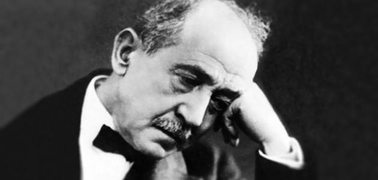

سمه الكامل هو محمود سامي بن حسن حسين بن عبد الله البارودي، وهو شاعر عربي مصري الجنسية، ولد في العام 1839م في اليوم السادس من شهر أكتوبر/ تشرين الأول في مدينة القاهرة عاصمة مصر، وأصله شركسي، ويلقب باسم رب السيف والقلم، وكان واحداً من زعماء الثورة العرابية، ورائداً في مدرسة البعث والإحياء في الشعر العربي الحديث، وتوفي في عام 1904م في اليوم الثاني عشر من شهر كانون الأول/ ديسمب
سمه الكامل هو محمد زاهر حسين بن عبد الله البارودي، وهو الشاعر المصمم عربي عماني الجنسية، ولد في العام 1839م في اليوم السادس من شهر أكتوبر/ تشرين الأول في مدينة القاهرة عاصمة مصر، وأصله شركسي، ويلقب باسم رب السيف والقلم، وكان واحداً من زعماء الثورة العرابية، ورائداً في مدرسة البعث والإحياء في الشعر العربي الحديث، وتوفي في عام 1904م في اليوم الثاني عشر من شهر كانون الأول/ ديسمب